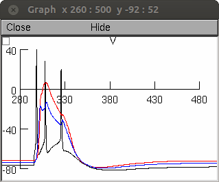
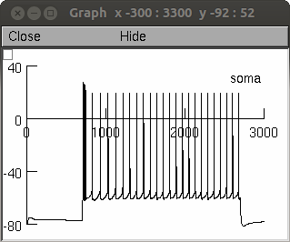
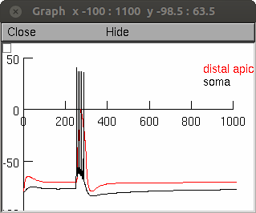

Author: Etay Hay, 2011
Models of Neocortical Layer 5b Pyramidal Cells Capturing a Wide Range of
Dendritic and Perisomatic Active Properties
(Hay et al., PLoS Computational Biology, 2011)
NEURON models and model sets corresponding to the paper:
Demo: Either auto-launch from ModelDB or download and extract the
archive and compile the mod files (with mknrndll (mswin and mac, or
nrnivmodl (linux/unix)) and then start the simulation by the file
init.hoc.
Once the simulation is started select a button to re-create parts of
Figure 4 from the paper. Clicking on the Fig. 4A should create an
image like:

Likewise the Fig 4B, Fig 5A buttons should create images like these:


Additional information:
folder: models
==============
NEURON code models, shown in various figures
L5PCbiophys1 - figure 1 (constrained only for BAC firing)
L5PCbiophys2 - figure 2 (constrained only for current step firing)
L5PCbiophys3 - figure 4 (constrained both for BAC and current step firing)
L5PCbiophys4 - figure S5 (AP initiation at the axon)
L5PCtemplate - general cell template
folder: simulation code
=======================
simulation code for BAC firing or step current firing.
folder: model sets
==================
model sets corresponding to various figures.
models_errors file: error values matrix (rows: models; columns:
objectives)
models_parameters file: parameter values matrix (rows: models;
columns: parameters) objetives file: objective names, each
corresponding to a column in models_errors file
genome file: parameter names and search limits, each corresponding to
a column in the models_parameters file
folder: mechanisms
==================
mod files of the conductance mechanisms used.
folder: morphologies
====================
The three morphologies used in the paper.
20130226 added critical_frequency.hoc to simulationcode folder
20130330 critical_frequency.hoc file updated with a comment regarding
a difference between 32 and 64 bit NEURON environments.